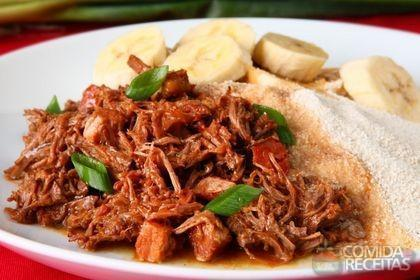

COMIDAS TÍPICAS DO BRASIL

Alguns pratos tipicos do Paraná são:
- porco no tacho
- porco no rolete
- pachola
- entrevero de pinhão
- costelão ao fogo de chão
- barreado
- pierogi
- carneiro no buraco
- carneiro ao molho de vinho
- pão no bafo
O que é porco no tacho?
Há 25 anos, o “Porco no tacho” se tornou o prato típico de Maringá. A iguaria surgiu meio por acaso, para servir amigos e parentes. O prato foi tão apreciado que eles resolveram investir no negócio e abrir um restaurante na beira da rodovia BR-376, que hoje atende 1500 pessoas todos os finais de semana.MODO DE PREPARAR:
Em um tacho colocar um pouco de óleo ou banha de porco para fritar toda a carne de porco, deixe a carne ficar num ponto dourado, depois deixe escorrer toda a gordura do tacho em fogo baixo e depois tempere do jeito que preferir.O que é porco no rolete?
A Festa Nacional do Porco no Rolete é um evento gastronômico que ocorre anualmente no município brasileiro de Toledo, no estado do Paraná.MODO DE PREPARAR:
Tempero: Dissolva 1 kg de sal num copo de vinho, com um pouco de água (até obter um tipo de massa fina) que deve ser passada nas partes internas e externas do porco. Num recipiente, dissolva 1/2 kg de sal, 1 copo de vinho, junte a pimenta, o alho, o louro, a alfazema, o alecrim. Misture tudo com água suficiente (4 litros) para cobrir o porco deixando o submerso nestes temperos, por aproximadamente 10 horas. Injete o mesmo tempero por toda a peça, com uma seringa bem grossa. Recheio: Frite em fogo brando o bacon, a linguiça calabresa, a cebolinha verde, a salsa, o louro, a alfazema, o alecrim. Junte posteriormente a carne moída, o tomate, o pimentão, a massa de tomate, a pomarola, a cebola, a noz moscada, triturando mais um pouco. Tire do fogo e ao esfriar, acrescente a azeitona, o milho verde, a ervilha, o palmito e os cogumelos, juntando ainda a farinha de mandioca e a farinha de pão para o recheio ficar bem consistente, acrescentando por fim, os ovos bem cozidos e picados, além de sal a gosto. Modo de assar: Tire o excesso de sal, enfiando o porco nos espetos apropriados. Asse em braseiro médio, durante um período entre 6 à 8 horas, dependendo do tamanho do porco, sempre girando na mesma direção e velocidade. Espete o assado com um objeto pontiagudo, para sair a gordura e não romper o couro, que deve ser limpo constantemente, para retirar o excesso de banha, evitando assim, que pegue fogo.
O que é pachola?
Pachola é um tipo de carne preparada na culinária mexicana. É originário do estado de Jalisco. Consiste em um rissol de carne moída achatada e temperada, feita com metato. A carne é misturada com ancho chili moído, cominho, alho e pão e frita em óleo. Pacholas às vezes são grelhados.MODO DE PREPARAR:
Tempere o frango com sal, pimenta, suco de limão e metade do cheiro-verde. Deixe pegar gosto por uns 30 minutos. Em uma panela coloque o óleo e doure bem o frango. Junte a cebola e o alho e refogue. Cubra com água e deixe a carne cozinhar em foto médio por uns 15 minutos. Junte o arroz, o tomate, a cenoura e a vagem. Adicione cerca de 5 xícaras (chá) de água quente e deixe cozinhar até a água seca. Acerte os temperos e finalize com o cheiro-verde.O que é entrevero de pinhão?
O Entrevero de pinhão é um prato típico dos estados da região sul do Brasil, principalmente das regiões serranas. É feito à base de pinhão e carnes
MODO DE PREPARAR:
Refogar as carnes pouco a pouco. Reservar. Em uma panela, de preferência de ferro, refogar o bacon em um pouco de óleo. Juntar os pimentões e a cebola Refogar bem. Juntar o alho até dourar. Depois juntar a carne, o pinhão e o tomate Misturar e checar o sal. Colocar por cima um pouco de salsinha e servir com arroz branco.O que é o barreado?
O barreado ou carne barreada é um prato típico do litoral paranaense, sendo o mais tradicional do estado. MODO DE PREPARAR:
Para começar, forre o fundo da panela com bacon para evitar que a carne pegue no fundo da panela durante o cozimento. Afinal, serão muitas horas no fogo e grande parte delas com a panela tampada e vedada pelo “barro” que teremos de fazer com farinha e água. Em camadas, coloque um pouco de carne cortada em cubos, em seguida a cebola, o alho e o sal. Depois, coloque novamente o bacon, a carne, a cebola, o alho e o sal. Faça no mínimo três camadas de cada. Cubra todo o conteúdo com água. Feito isso, é hora de barrear a panela. Coloque a farinha em um pote com água, o bastante para formar uma massinha que, moldada com as mãos, permita a vedação da panela (veja no vídeo acima). Com a massinha, feche a panela completamente. No fogo alto a panela ficará por uma hora. Se surgir um furo (por onde vazará água quente), faça mais massa para tampá-lo. Depois de uma hora, mais duas horas de fogo médio. Abra a panela e vá regando com mais água. Leve ao fogo médio novamente novamente por mais 5 horas. Cuidado ao retirar do fogo. Depois de pronto, acrescente um pouco de cominho e louro. Em seguida, acrescente o cheiro verde. Essa receita rende para 15 pessoas. Observação: Caso não tenha a panela de barro, cubra todo o conteúdo com água. Feche a panela e coloque para cozinhar por no mínimo três horasO que é pierogi?
Pierogi é um tipo de pastel cozido muito consumido na Europa central e de leste, mas na Polônia e oeste da Ucrânia, onde é chamado PyrohyMODO DE PREPARAR:
Coloque numa bacia grande os ovos, a farinha e o azeite. Amasse muito bem, quando a massa estiver lisinha, abra como massa de pastel, usando rolo, uma garrafa limpa. Corte a massa com um copo, recheie a massa, feche passando um garfo nas bordas e cozinhe, em aproximadamente 2 litros de água fervente, por 5 minutinhos. Coloque por cima seu molho preferido, branco ou ao sugo.O que é carneiro no buraco?
O Carneiro no Buraco é um prato típico, tradicional e um símbolo de Campo Mourão, cidade do interior do estado brasileiro do Paraná. A iguaria é festejada anualmente na "Festa Nacional do Carneiro no Buraco".MODO DE PREPARAR:
Bata todos os temperos no liquidificador. Depois desse período, monte o tacho. Misture à carne e reserve por cerca de 3 h. Depois desse período, monte o tacho. Prepare o fogo no buraco. Quando as brasas estiverem no ponto, coloque a carne. Coloque os ingredientes em camadas. Por último, devem ser colocadas as maçãs, que servem de termômetro: quando você abrir o buraco e tirar o tacho, se a maçã estiver bem murcha, estará no ponto. Enterre o tacho. No total, são 12 h de preparo. No buraco, são 4 h.O que é Carneiro ao molho vinho?
Carneiro ao Molho de Vinho é uma iguaria da cozinha paranaense e prato típico de Peabiru – PR, servido anualmente na Festa do Carneiro ao Vinho, no 3º domingo de agosto, ao lado da Igreja Matriz.MODO DE PREPARAR:
Tempere o carneiro com todos os ingredientes e deixe na marinada, dentro da geladeira, por 1 dia. Escorra a carne da marinada e coloque em uma panela aquecida com o azeite. Quando a carneiro mudar de cor, junte a cebola picada e mexa bem até a cebola murchar. Junte a marinada coada e o extrato de tomate e deixe cozinhar até o carneiro ficar macio e o caldo encorpado. Junte as azeitonas, acerte o sal, regue com mais azeite e sirva.O que é pão no bafo?
O Pão no bafo, conhecido também como Pão de bafo, ou ainda Pão de russo, é um prato típico do Paraná, mais precisamente da região do município de Palmeira. O município de Palmeira está localizado na região dos Campos Gerais do Paraná, região que recebeu imigrantes russos-alemães.MODO DE PREPARAR:
Misture o fermento com o leite morno e o açúcar e mexa bem; Em outra vasilha, misture o trigo, os ovos e a banha; Acrescente nessa mistura o fermento e o sal; Cubra e deixe ela crescer por pelo menos uma hora; Com a massa crescida, faça bolinhas; Enquanto os pãezinhos descansam mais um pouco, refogue todas as carnes no azeite de oliva; Em seguida, adicione a cerveja e um pouco de água; Baixe o fogo e deixe cozinhar com a panela fechada; Em cima do repolho acomode as bolinhas de pão.